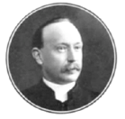

-1-MasterItem.svg)
Stories of Westminster United Church & its People / Page
37
of wind to carry them to harbor. The record suggests that Scottish doctors
recommended that
Margaret not attempt the voyage home to Prince Edward Island, where the family
now lived, on
account of her frayed “nerves”. Whether or not this recommendation, which smacks of the sexism
underlying much of Victorian medicine, was medically sound, Margaret had surely
earned the right
to stay in her native home. At any rate, she refused to return to PEI. John, now
a minister of a
Presbyterian church in Georgetown, soon resigned and moved with the rest of the
family
to Scotland. Clarence was 15 at this point.
By the time he was 22, his father had died and he and his two brothers, George
and Albert, were
attending the University of Edinburgh. The only general degree courses available
at that
time were Greek, Latin, mathematics, philosophy, English, physics, and moral
philosophy. In 1889, now 23, Clarence pursued a Master’s in theology. Like Charles
Pitblado, he was an enthusiastic learner, but his intellectual interests ran in
more
eclectic directions. He’d already won several prizes in mathematics, and was
admitted as a Master’s student upon winning the University’s second highest
scholarship. Rebelling against the received opinion of the Christian
establishment
of his day, Clarence explored an interest in evolutionary theory, whose most
famous
pioneer, Charles Darwin, was also an alumnus of the University of Edinburgh.
Reflecting
upon his early studies, which unfolded in a period when Britain’s leading institutions of higher
learning were being steadily infiltrated by Darwin’s revolutionary ideas, Clarence writes:
“I can still recall the thrill of delight when I first learned how life was made
up of individual cells
that had developed and become diversified into so many organisms … Up to that time however I
had been too well instructed to lend a ready ear to Evolution, indeed had fought
it in the mind…”
This defiance was undone by his curiosity, which led to study. Exploiting the
exceptional intellectual
environment of the University of Edinburgh — which, in addition to schooling Darwin, was a vital
organ of the Scottish Enlightenment — Clarence’s “hesitating feet” were drawn from the seminary
to the natural history classroom. While initially resisting “with a mysterious sense of dread”
the ideas expounded in the first two lectures he attended on evolution, by the
third lecture,
on embryology, he “succumbed:”

Rev. Clarence MacKinnon